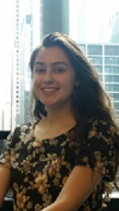
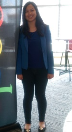
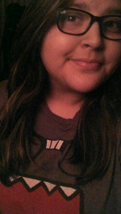
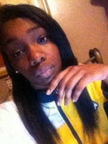

About Us: #ProjectSPARK




/* Giana Moreno + Emma Liu + Gabriella Rodriquez + Timaya Johnson */
Meet the developers!
Giana Moreno, 16, from the greater Chicago area, has a passion and ambition to equalize the gender parity. She embarked on this mission by participating in Girls Who Code at General Electric. Prior to the program, Giana had zero exposure to coding. Thankfully, a teacher pushed her to apply to the program where she blindly leaped into the vast world of computer science. Giana successfully guided the project as scrum master of development.
Emma Liu, 16, was excited to commit to the daily commute into the city and participate at General Electric's Girls Who Code SIP Program this year. She took AP Computer Science as a sophomore at her high school, where her love for coding and problem-solving blossomed. At the same time, she realized how vital gender parity is in the STEM fields. As the only girl in her computer science class, she took the challenge to heart, applying to become part of the GWC community when the opportunity came. She has developed a passion for challenging herself with new coding languages. She served as the product manager of #ProjectSPARK, as well as the main spokesperson.
Gabriella, 16, loves to read and listen to music in her free time. She loves theater and she enjoys singing. She was so excited to be accepted into the Girls Who Code Summer Immersion Program. She is so grateful for the experience.
Timaya Johnson, 16, goes to her local high school in Chicago Heights, IL where she will be an incoming junior. There are no computer science classes at her school, which is why she decided to join Girls Who Code this summer. She is a current Girls Who Code student who is loved by her TAs, Winnona and Ashley, for her intelligence and humor.
Thanks, Girls Who Code and GE Chicago! We couldn't have done it without you!
- Team GEGT, Summer Immersion ProgramP 2015